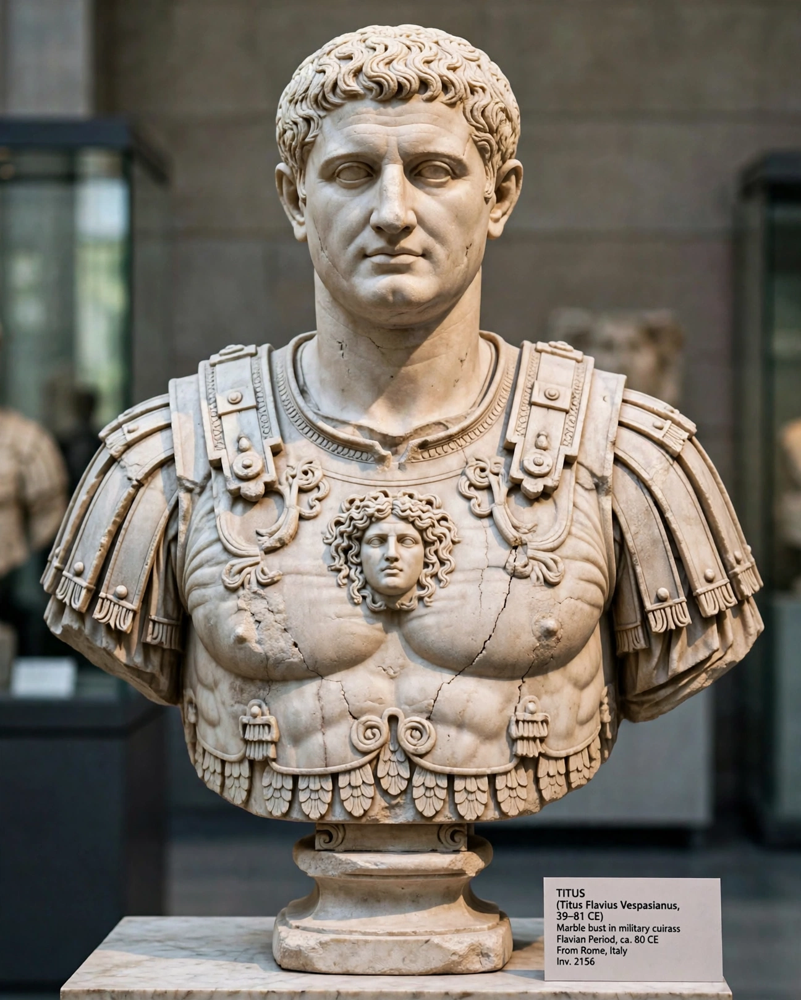

Titus Caesar Vespasianus (30 December 39 – 13 September 81 AD) was Roman emperor from 79 to 81 AD. A member of the Flavian dynasty, Titus succeeded his father Vespasian upon his death, becoming the first Roman emperor to succeed his biological father. Before becoming emperor he gained renown as a military commander, serving under his father in Judaea during the First Jewish–Roman War. The campaign came to a brief halt with the death of emperor Nero in 68 AD, launching Vespasian's bid for the imperial power during the Year of the Four Emperors. In 70 AD, Titus besieged and captured Jerusalem, destroying the Second Temple — an event commemorated by the Arch of Titus in Rome.
| Reign | 24 June 79 – 13 September 81 |
|---|---|
| Predecessor | Vespasian |
| Successor | Domitian |
| Born | 30 December 39, Rome |
| Died | 13 September 81 (aged 41), Rome |
| Father | Vespasian |
| Mother | Domitilla the Elder |
| Spouses | Arrecina Tertulla; Marcia Furnilla |
| Issue | Julia Flavia |
| Dynasty | Flavian |

Titus was born in Rome on 30 December 39 AD, the eldest son of Vespasian and Domitilla the Elder. He was educated at court alongside Britannicus, the son of the emperor Claudius, and pursued a military career, serving in Germania and Britain. On his father's appointment to command in Judaea, Titus accompanied him with a legion from Egypt.
After Vespasian was proclaimed emperor in 69 AD, Titus was left to conclude the Jewish war. In 70 AD he besieged Jerusalem with four legions. Despite efforts to preserve the Temple, the city was stormed and the Second Temple burned, ending Jewish Temple worship. The spoils of the Temple, including the great menorah, were paraded in the Flavian triumph in Rome in 71 AD and are depicted on the Arch of Titus. The last rebel stronghold, Masada, fell in 73 or 74 AD, after Titus had returned to Rome.
During his father's reign Titus served as praetorian prefect and shared tribunician power and consulships. He was criticised for his relationship with the Jewish queen Berenice, which ended before his accession. As emperor from 79 AD, Titus quickly gained popularity: he completed the Flavian Amphitheatre (the Colosseum), opened in 80 AD with lavish games, built the Baths of Titus, and won praise for generous disaster relief after the eruption of Mount Vesuvius in 79 AD and a fire and plague in Rome in 80 AD.
Suetonius reports that he reviewed his conduct each day, lamenting any day on which he had done nobody a good turn: "Friends, I have lost a day." Titus died of a fever on 13 September 81 AD after a reign of just over two years and was succeeded by his brother Domitian. He was deified by the Senate, and ancient sources remember him as "the delight of the human race."
The Arch of Titus, the Colosseum's completion, and the literary record of Josephus define Titus's historical image: a capable general and a short-reigned, popular emperor whose destruction of Jerusalem remained a turning point in Jewish history.